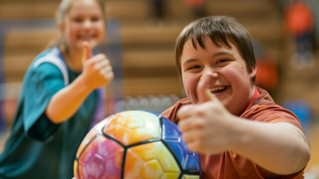
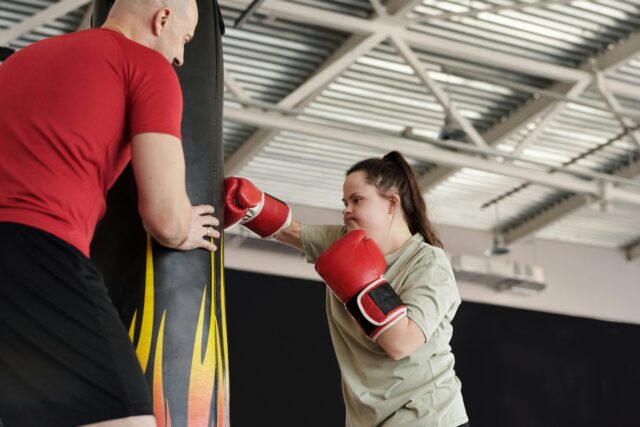
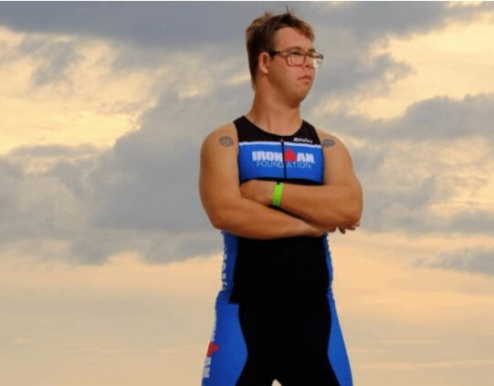
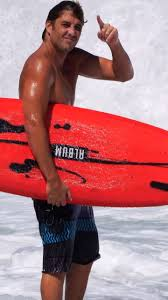

By the end of this module, you will be able to:
“Great coaches don’t coach a drill—they coach the person.”
“Meet them where they are, and they’ll rise.”
Watch this video:
If you are a coach, supervisor or team leader, supporting a person with disability to learn and play a sport may take more time and patience. Here are a few tips to get you started. Remember everyone is different and everyone will need a different approach.
What you need to ask:
Helping every player feel comfortable, learn at their own pace, and enjoy being part of the team.

□ Have a set routine for each session.
Start with a warm-up, move into drills, then a game and cool down.
Let players know what’s happening next. This helps them feel more prepared and less anxious.
□ Start and finish at the same time each week.
If anything is going to change, give players a heads-up early.
□ Show what you mean.
Use hand signals, cones, or drawings on a whiteboard to explain activities.
Some players understand best by seeing, not just hearing.
□ Visual schedules help.
You can use pictures, symbols, or written lists so players can follow along easily.
□ Use short, simple sentences.
Break down drills into small steps. Repeat the key parts and check that the player has understood.
□ Get their attention first.
Say their name, make eye contact, or gently tap their shoulder before speaking.
□ Choose a quiet space for talking or demonstrations.
This helps players focus and reduces overload from noise or activity around them.
□ Provide sensory tools like fidget spinners to help players who may be distracted.
□ Talk to the person one-on-one if they seem distracted in the team.
□ Fidgeting or pacing might be communication.
Try to understand what the behaviour is telling you. Be patient and supportive.
□ Stay calm, even if things feel chaotic.
If someone gets upset, use a quiet voice, give them space, let them go to a quiet spot, and let them know you’re there when they’re ready.
□ Build short breaks into the session.
This could be a drink, a breather, or sitting quietly for a moment.
Having a calm space available helps everyone, not just players with disability.
□ Make breaks normal.
Say things like, “If anyone needs a quick break, grab a drink and come back when you’re ready.”
□ Offer different ways to join in.
If a full game is too much, a player could play part of it or help with gear.
In a drill, they might try a simpler version of the skill.
□ Pair new players with a teammate.
A buddy can model drills, give encouragement, and help them feel part of the group.
□ Your calm attitude matters.
Avoid yelling. Give reassurance.
Be someone your players can trust, especially when they’re having a tough moment.
You don’t need to be perfect. Just be kind, consistent, and willing to adapt. Every player has something to offer, and it’s our job to help them shine.
Use visual aids like boards and pictures, explain things clearly, and stand closer to ensure everyone can hear better.
Case Study: Australia’s most watched sporting event was the Matildas’ World Cup campaign in 2023. But did you know the hero of their quarter-final win was an athlete with disability?
Matildas goalkeeper Mackenzie Arnold has always had a hard time hearing and finally started using a hearing aid for daily life after years of trying to avoid it.
As a coach, it is important that we can change the way we deliver messages to players to ensure we don’t lose people from the game.
How to help: If you notice a player not following along or misunderstanding instructions, it may be due to hearing loss combined with other factors such as background noise or wind conditions. Some players might not even know they have worse hearing than others who are next to them. To counter this, make sure that you have a range of techniques to make sure the message can be understood.
People who have a vision impairment will need more audible cues and instructions in a conversational manner. Some with low vision may find it useful to have visual aids like large posters and whiteboards, use bright-coloured equipment, and bring players closer to the visual aids.
Case Study: There are a vast number of athletes with different levels of vision impairment. This can be from athletes who need to wear modified eyewear when competing, such as Edgar Davids, Kareem Abdul-Jabbar and Mack Horton.
Vision impairment is something that can affect how an athlete performs in training and adaptations should be made to encourage their development.
How to help: At training, coaches can provide verbal cues and talk through the instructions, including letting the person know about the environment around them. For example, they may need to know about a tree at the end of the field or a big hole on the field.
For people with low vision, create large format visual aids such as large posters and whiteboards to explain the training. If anybody has a visual impairment, bring them closer to the visual aid and make sure they can understand its importance.
There are also other tools to help such as modified equipment, including balls with bells inside and bright-coloured equipment such as bright pink cricket balls.
In sports such as blind soccer, each team has several coaches that describe gameplay in real time to help the player’s performance.
Create a supportive environment, use non-verbal communication, and provide options for participants to use hand signals or clapping.
Example: Tiger Woods is one of the most famous golfers of all time but severely struggled with a stutter as a child. He used to sit at the back of the classroom and never speak.
After years of classes and practising talking to his dog until it fell asleep, Tiger’s hard work paid off and he overcame his condition and became fully confident in his ability to speak. But if Tiger Woods had been in a team sport where coaches asked him questions in front of a team, he may have quit and never become an athlete.
How to help: People with speech impediments can feel embarrassed to express themselves in front of their peers. Understanding this might mean that if somebody is confused about the training, they might be too scared to ask questions due to the reaction of the coach and teammates.
Creating a supportive environment is one of the best ways to let people feel comfortable and will improve their enjoyment and engagement with playing sport.
Another way to help can be by increasing the use of non-verbal communication.
Look for opportunities to provide the participant with options to use non-verbal communication where needed. This could include them pointing to where they need to go, using hand signals, raising their hand, or clapping to draw attention to themselves if they cannot speak. Communication boards or cards could also help in this scenario.
Remember each person is different. Talk to them first to see what they need help with.
This could mean:
Example: With the improvement of inclusive sports programs, equipment and support, we have seen more and more groundbreaking sporting achievements for people with disability.
In the last few years, we have seen the first person with Down syndrome become an Ironman athlete, the first athlete with Down syndrome to play and score in a college football match, and the first runners with Down syndrome to complete the New York Marathon.

These are only some examples of sporting achievements since 2020, and it will only increase.
How to help: Down syndrome can lead to learning disabilities, reduced muscle tone, and issues with sight and hearing. Due to the range of impacts Down syndrome can cause, the participant may need help in both physical and cognitive ways.
This can include slow and clear explanations when giving instructions, breaking down skills into smaller steps, and making sure you are heard easily while trying to avoid areas with background noise in a well-lit area.

Neurodiverse: The word neurodiversity refers to the diversity of all people, but it is often used in the context of autism spectrum disorder, as well as other neurological or developmental conditions such as ADHD or learning disabilities.
Example: Autism is a neurodevelopmental condition that affects brain function. Symptoms can include getting distressed by loud noises, bright lights, strong tastes and smells, as well as being around other people.
One example of an athlete who has autism is professional surfer Clay Marzo. Clay has struggled socially within sport, and he finds it hard to hold conversations and make friends. This is why he only participated in individual sports in school, such as swimming and surfing.

How to help: People with autism tend to prefer a routine, so starting and finishing a training session should have some consistency. For example, start every training session with a greeting, explanation of the upcoming session, and a warm-up.
This routine will bring comfort and allow for the best results in training. Another way to ensure that somebody with autism feels safe and secure in a sporting setting is to make sure there is minimal background noise and lighting is not too bright. This might include turning off the buzzer at basketball training, training at a time when there are fewer people around, or communicating in different ways such as on a whiteboard or with cue cards.
Use structured routines and minimise sudden changes.
For people with physical disability, they may need modifications to help play their sport. Ask them what would help them succeed before deciding for them.
Example: Like Down syndrome, cerebral palsy can affect both physical and cognitive ability. Some common symptoms of cerebral palsy are slow and withering movement, floppy or rigid limbs, and intellectual disabilities.
Just because this is a severe disability that affects muscle function and strength, does not mean that you cannot be a successful athlete. As a child, athlete Justin Gallegos was told he would never walk unassisted due to his cerebral palsy diagnosis and relied heavily on a walker and brace during school.
Justin trained to run, becoming a professional athlete and the first with cerebral palsy to be sponsored by Nike.
How to help: As cerebral palsy affects the muscles, equipment can be modified to help somebody with cerebral palsy. This includes lowering the ring height at basketball training, using a balloon instead of a ball, or reducing the amount of space used in a training drill.
Example: There has been a massive rise in the popularity of sports for people with disability, which is continuing to grow.
One example is wheelchair tennis and the rise of Dylan Alcott. In 1992, the ITF’s Wheelchair Tennis Tour began with just 11 tournaments. Today there are over 160 tournaments in over 40 countries.
Through wheelchair tennis, Dylan Alcott has won Olympic gold medals, tennis grand slams, the Australian of the Year Award, and created the Dylan Alcott Foundation.
All of this would not have been able to happen without inclusion in sport.
How to Help: Sport can be modified for inclusivity to ensure everybody can participate. Not only do we have full wheelchair sports leagues such as basketball, tennis, and rugby, but every sport can be altered for training and gameplay. Even soccer, which generally requires the most leg activation, has an indoor wheelchair soccer competition with bumpers on the bottom of the wheelchairs.
“It’s not just about playing cricket. It’s about belonging.”
The Autism in Cricket program is a standout initiative that has helped local cricket clubs across Western Australia become welcoming, autism-friendly environments for players of all ages.
How did they do it:
The Impact:
“Our club has grown stronger by including kids who just needed us to meet them halfway.” Cricket Club Volunteer Coordinator
End of Module 3. Thank you for completing this module that provides guidance on disability awareness.